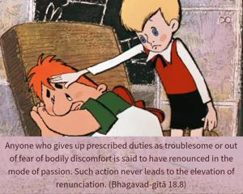

Anyone who gives up prescribed duties as troublesome or out of fear of bodily discomfort is said to have renounced in the mode of passion. Such action never leads to the elevation of renunciation.

One who is in Kṛṣṇa consciousness should not give up earning money out of fear that he is performing fruitive activities. If by working one can engage his money in Kṛṣṇa consciousness, or if by rising early in the morning one can advance his transcendental Kṛṣṇa consciousness, one should not desist out of fear or because such activities are considered troublesome. Such renunciation is in the mode of passion. The result of passionate work is always miserable. If a person renounces work in that spirit, he never gets the result of renunciation.